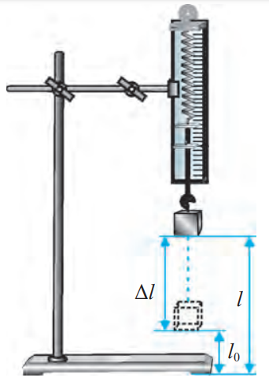

Ishning maqsadi: eng oddiy dinamometr prujinasining bikrligini aniqlash orqali jismlarning deformatsiyasi va bikrligi haqida tasavvurlarni kengaytirish, elastiklik kuchi haqida olingan nazariy bilimlarni mustahkamlash.
Kerakli jihozlar: shtativ, eng oddiy dinamometr, yuklar to'plami, millimetrli qog'oz.

Ishni bajarish tartibi: 1. Prujinadan dinamometr yasash uchun shkalasiga millimetrli qog'oz yopishtiring.
2. Dinamometrni shtativga rasmda ko'rsatilgandek mahkamlang.
3. Dinamometr ko'rsatkichini boshlang'ich vaziyatini shkaladagi millimetrli qog'ozga belgilang.
4. Dinamometr ilgagiga m1 massali yukni iling, uning ta'sirida prujinaning ΔL1 uzayishini o'lchang va natijani jadvalga yozing.
5. Massalari m2 va m3 bo'lgan yuk uchun ham prujinaning ΔL2, ΔL3 cho'zilishlarini o'lchang va natijalarni jadvalga yozing.
6. Dinamometrga osilgan har bir yuk uchun prujinaga ta'sir etgan tashqi kuchlarni Ft=mg formula bo'yicha hisoblang va natijalarni jadvalga yozing (g=9.8m/s2 deb olinsin.)
7. Har bir o'lchangan ΔL1, ΔL1, ΔL1 va hisoblangan Ft1=mg, Ft1=mg, Ft1=mg natijalarni k=F/ΔL formulaga qo'yib, k1, k1, k1 prujinalar bikrligini hisoblang va natijalarni jadvalga yozing.
6. ko`rt=(k1+k2+k3)/3 formula bo'yicha prujinaning o'rtacha bikrligini hisoblang.
7. Δkn=|ko`rt-kn| formuladan absolut xatolik toping.
8. Δko`rt=(Δk1+Δk2+Δk3)/3 formuladan absolut xatolikning o'rtacha qiymatini hisoblang.
10. ε=(Δko`rt/ko`rt)*100% formuladan nisbiy xatolikni toping.
11. Natijalarni tahlil qiling va hulosa chiqaring.
| T/r | m | Ft | ΔL | k | ko`rt | Δk | Δko`rt | ε, % |
| 00000 | 0000000000 | 0000000000 | 0000000000 | 0000000000 | 0000000000 | 0000000000 | 0000000000 | 0000000000 |